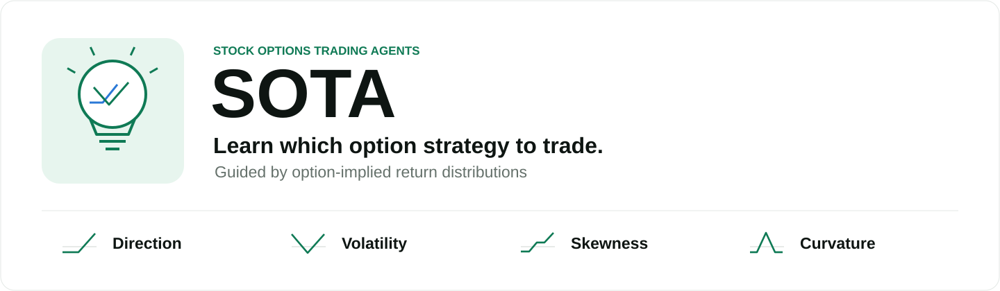

Phase I · Supervised fine-tuning
A frontier LLM produces trading trajectories from anonymized market states and contemporaneous news. Trajectories pass an outcome gate before the student is trained on the teacher's decisions.

SOTA learns which option strategy to trade. Its nine strategy families express four kinds of exposure: direction (outrights and vertical spreads), volatility (straddles and strangles), skewness (defined-risk reversals), and curvature (butterflies and iron condors). The agent chooses the payoff shape; deterministic resolvers handle contracts, sizing, and hedging.
The teacher provides a starting point. Portfolio rewards refine the student. Follow the six steps to see how the two training phases connect.
This static diagram shows both training stages. The frontier teacher generates supervised trajectories; reward-driven reinforcement learning refines the student.
Simplified overview. News is used for teacher supervision; the reported RL policy uses market states only. The feedback arrow summarizes reward computation and policy optimization.
A frontier LLM produces trading trajectories from anonymized market states and contemporaneous news. Trajectories pass an outcome gate before the student is trained on the teacher's decisions.
The student interacts with the same portfolio environment and learns from rewards net of transaction costs. The reported configuration uses market states only.
Nine option-strategy families express different directional, volatility, skewness, and curvature exposures.
Rule-based resolvers map decisions to contracts, position sizes, and delta hedges.
Features and news respect information-availability timestamps. Identity, price levels, and calendar time are anonymized.
Options on SPY and nine large-cap U.S. equities. Test window: March 3–August 29, 2025. Values below come from the repository's results table.
| Policy | Total return (%) | Sharpe ratio | Max. drawdown (%) |
|---|---|---|---|
| SOTA | 18.32 | 1.60 | 8.96 |
| Equal-weighted rule | -5.22 | -13.46 | 5.22 |
| GARCH rule | -49.24 | -6.27 | 49.42 |
| Threshold rule | -28.46 | -1.95 | 33.16 |
| GBDT | -49.78 | -8.55 | 49.78 |
| Logistic | -55.45 | -11.63 | 55.47 |
SOTA: Qwen3.8-27B after supervised fine-tuning and reinforcement learning. Full metrics and provenance ↗